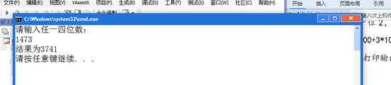
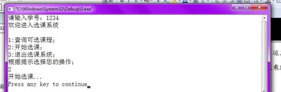
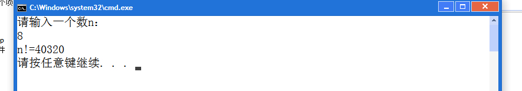
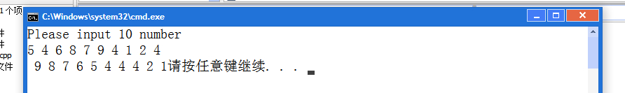

第八次上机作业
实验目的：
掌握函数的定义；
掌握函数的参数传递和返回值；
实验内容：
1、 用调用函数实现：主函数从键盘任意输入一个4位正整数，用调用函数编程计算并输出它的逆序数。例如输入2367，分离出其千位2，百位3，十位6，个位7，然后计算7*1000+6*100+3*10+2=7632，把此数返回给主调函数，在主调函数中打印输出结果。
#include<stdio.h>
int f1(int f)
{
float a,b,c,d;
a=f/1000;
b=(f%1000)/100;
c=(f%1000%100)/10;
d=(f%1000%100%10);
f=int(d)*1000+int(c)*100+int(b)*10+int(a);
return f;
}
void main()
{
int f;
printf("请输入任一四位数：\n");
scanf("%d",&f);
f=f1(f);
printf("结果为%d\n",f);
}
2、 把第四次作业的第2题中，用户名验证和密码验证用一个函数实现，验证成功返回1，验证失败返回0；界面显示用一个函数来实现；打印每项功能分别用一个函数来实现
#include <stdio.h>
int f1(int a)
{
if (a!=1234)
{
return 0;
}
else
{
return 1;
}
}
int f3(int a)
{
switch (a)
{
case 1:printf("开始查询课程...\n");break;
case 2:printf("开始选课...\n");break;
default:;
}
return 0;
}
int f2(int a)
{
if (a)
{
printf("欢迎进入选课系统\n\n1:查询可选课程；\n2:开始选课；\n3:退出选课系统；\n根据提示选择您的操作；\n");
}
return 0;
}
void main()
{
int a;
printf("请输入学号：");
scanf("%d",&a);
a=f1(a);
f2(a);
scanf("%d",&a);
f3(a);
}

3、 (选做)用函数递归实现求n！
#include <stdio.h>
int f1(int n)
{
if (n>1)
{
n=n*f1(n-1);
return n;
}
}
void main()
{
int n;
printf("请输入一个数n：\n");
scanf("%d",&n);
n=f1(n);
printf("n!=%d\n",n);
}
4、 （选做）用函数实现任意10个数的排序操作，这10个数值在从主调函数传来，排序后再主调函数中打印输出。
#include<stdio.h>
#define N 10
void swap(int x[]);
int main()
{
int x[10];
printf("Please input 10 number\n");
for(int i=0;i<N;i++)
scanf("%d",&x[i]);
swap(x);
for(int j=0;j<N;j++)
printf("%2d",x[j]);
}
void swap(int x[])
{
int l,m,t;
for(l=0;l<N-1;l++)
{
for(m=l+1;m<N;m++)
if(x[l]<x[m])
{
t=x[l];
x[l]=x[m];
x[m]=t;
}
}
}
